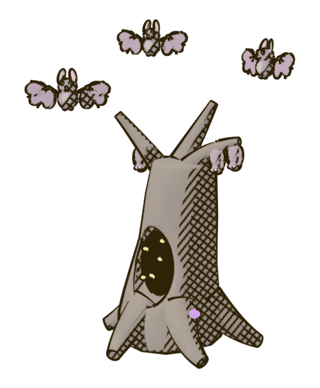
Last Boss · o que você precisa decidir
São 5 decisões. Depois delas eu sigo com todo o resto sem perguntar mais nada. Responda no chat, por exemplo: arte v2 · upgrades 3 · cartas ok, tirar a 14 da Praga · chefes ok · regras ok.
- Estilo da arte das cartas: v1, v2 ou v3 (ou outro caminho)
- Visual dos upgrades: hoje, 1, 2 ou 3 (pode misturar)
- Lista de cartas dos 3 vilões: o que fica, muda ou sai
- Silhueta dos 3 chefes
- Regras novas: última chance de veto
No fim da página: as correções que já estão prontas na branch viloes (nada foi para a main).
1. Estilo da arte das cartas
Cinco cartas de amostra feitas como você pediu: modelo 3D renderizado com traço de nanquim. O mesmo render gera as três variações, então trocar de estilo depois não custa refazer os modelos. A coluna "hoje" é o desenho que a carta usa agora (emprestado de outra carta).
Qual variação vira o padrão? Se nenhuma servir, diga o que incomoda (traço, hachura, cor, os modelos em si).
Hoje
v1 · Nanquim puro
v2 · Aguada
v3 · Duas tintas
Toca de Ratos
hoje: Ninho de Morcegos
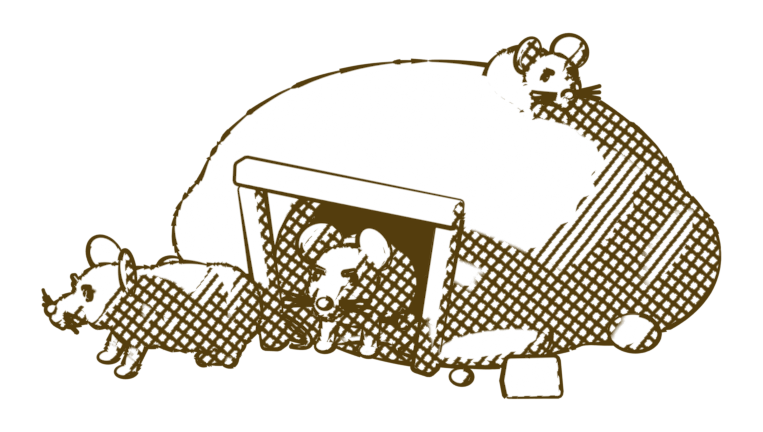
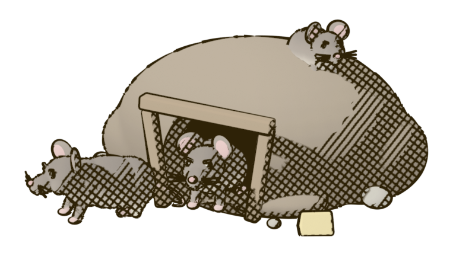
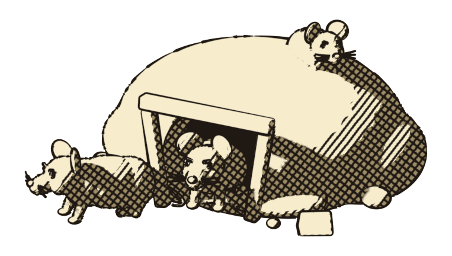
Carniçal
hoje: Lobisomem
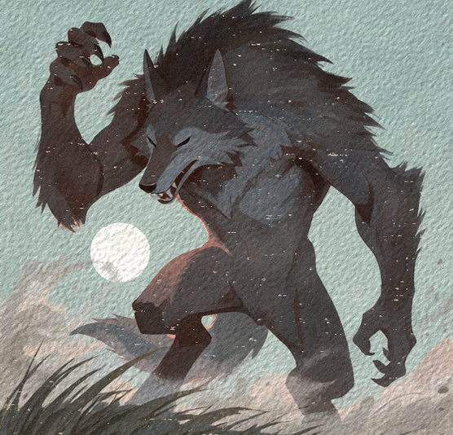
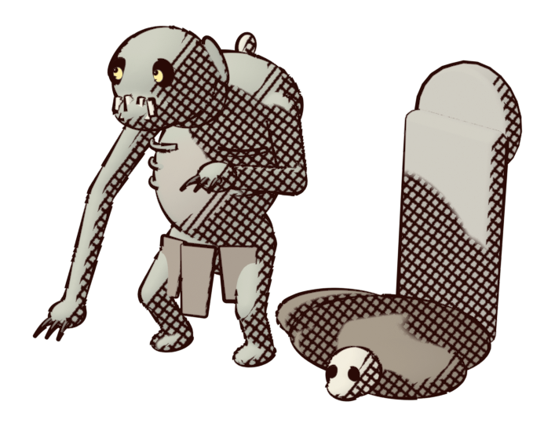
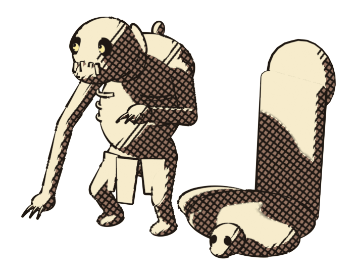
Diabretes de Fogo
hoje: Goblin Dinamiteiro
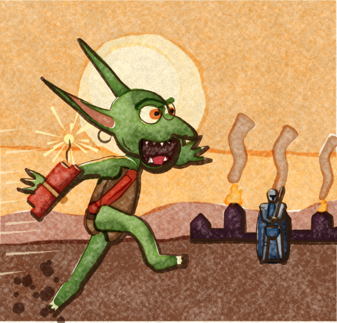
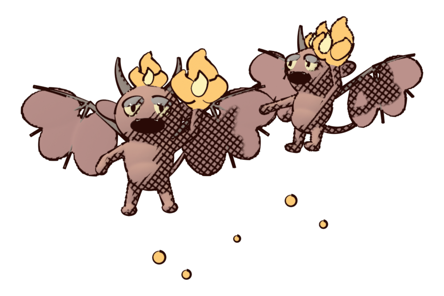
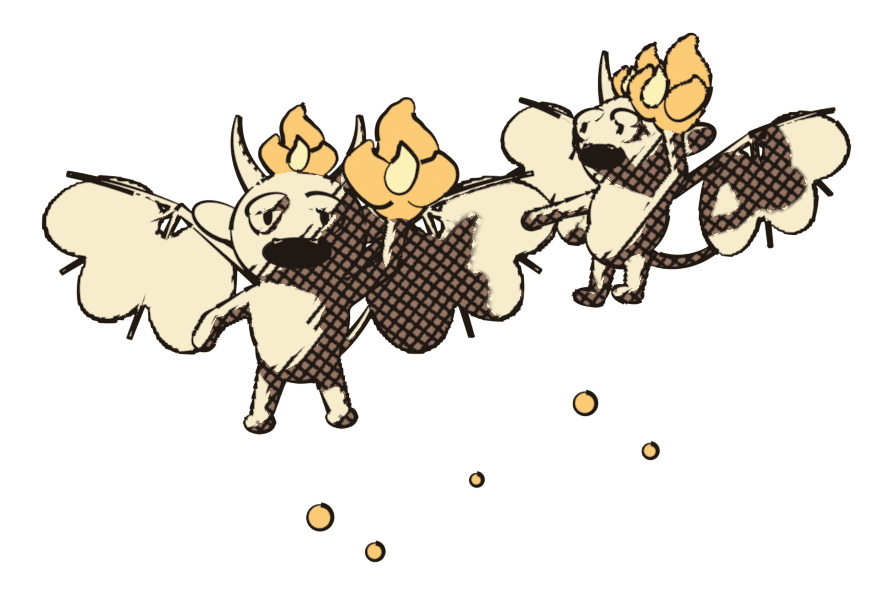
Tocha
hoje: Incêndio (casa em chamas)
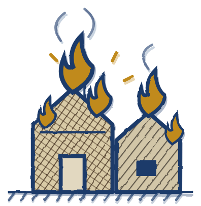
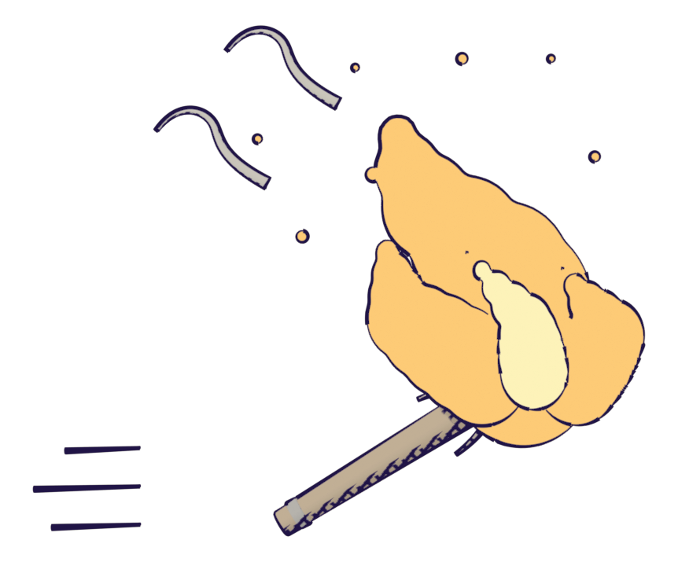
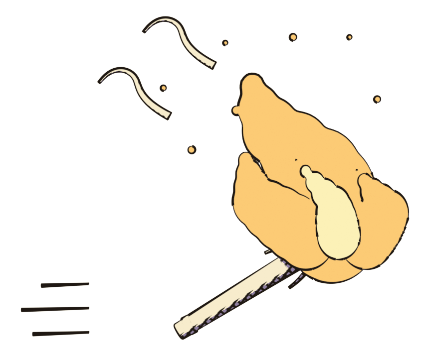
Rainha da Praga
retrato do vilão (novo)
não existe
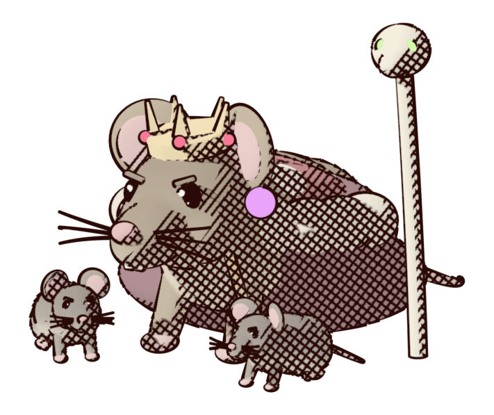
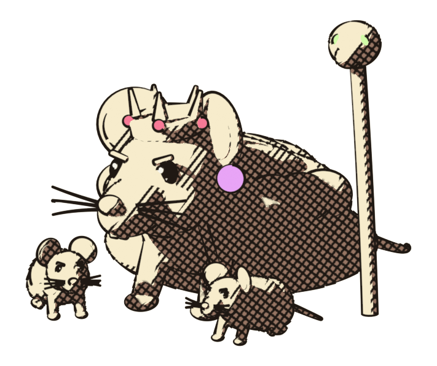
Minha leitura, para você discordar
- v1 é a mais fiel ao Diário de hoje (só tinta sobre o papel), mas é a que menos separa figura e fundo quando há muita hachura.
- v2 lê melhor de longe e deixa fogo, olhos e veneno coloridos. É a minha recomendação.
- v3 tem o maior contraste e cara de gravura impressa; fica mais "limpa" e menos pintada.
- Pontos fracos das amostras: a chama da Tocha ainda é simples, as asas dos Diabretes estão arredondadas demais e a Rainha da Praga é o Rei dos Ratos com manto e cetro, não o modelo final (o corpo dela está na seção 4).
2. Visual dos upgrades
A mesma carta em cada estado: base, nível 2, nível 3, os 5 modificadores e duas combinações. Em cima a carta grande, embaixo a compacta (a da mão). Para ver ao vivo e trocar com as teclas 0 a 3: godot --path . res://game/upgrade_showroom.tscn.
Qual proposta fica? Pode misturar: por exemplo "nível da 1 com modificador da 3".
Hoje
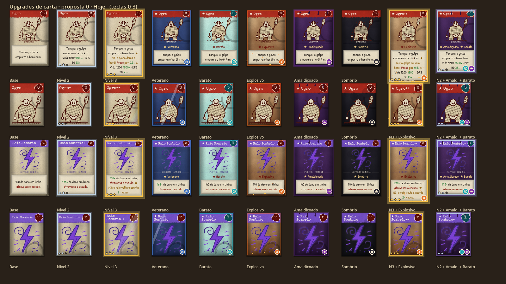
Proposta 1 · Encadernação
Nível muda a encadernação (couro no N2; cantoneiras de ouro e fita marcadora no N3). Modificador é um lacre de cera colorido. Fraqueza: N2 e N3 se parecem de longe; o lacre é pequeno.
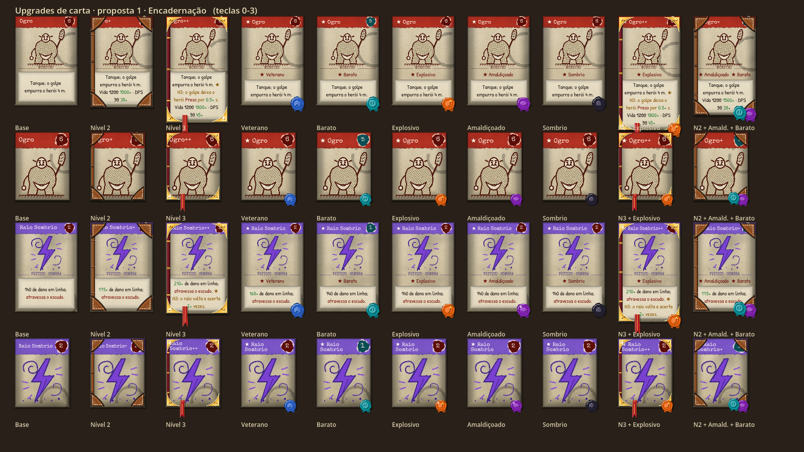
Proposta 2 · Tinta viva
Nível vira moldura desenhada (nanquim no N2, iluminura dourada no N3). Modificador é uma mancha de tinta da cor dele escorrendo do custo. Fraqueza: o N2 é discreto na carta compacta.
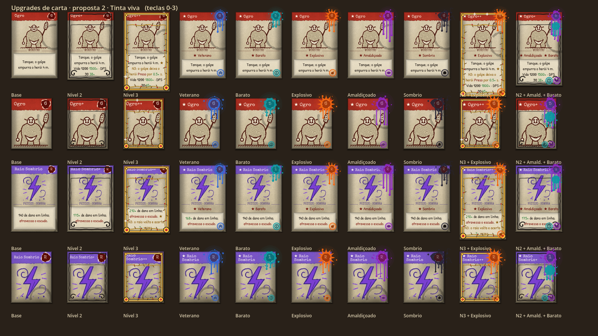
Proposta 3 · Carimbos e condecorações
Nível vira medalhas penduradas (prata no N2, prata e ouro no N3). Modificador é um carimbo grande em diagonal com o nome. É a mais legível de longe; em troca, o carimbo cobre parte do desenho.
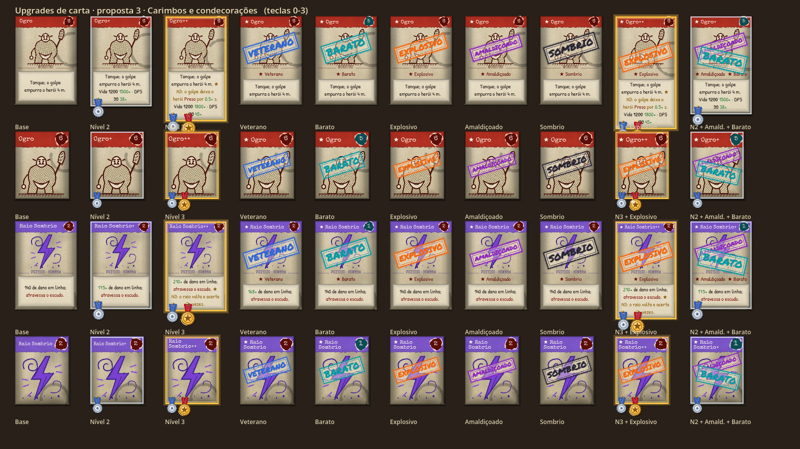
Em qualquer escolha, a oferta de upgrade dentro da run passa a mostrar a carta antes e depois, lado a lado.
3. Lista de cartas dos 3 vilões
84 cartas: 24 exclusivas por vilão + 12 comuns. 41 já existem, 43 são novas, com custos de 0 a 12.
Marque o que fica, muda ou sai. Se preferir não ler carta a carta, basta aprovar a ideia e os 3 combos de cada vilão.
| Vilão | Ideia | Passiva | Poder do fim (ato 3) |
|---|---|---|---|
| Rainha da Praga Bando + Feras | Quanto mais bichos em campo, mais forte cada um; as feras se alimentam do enxame | Criatura de Bando que morre tem 20% de chance de deixar um rato | Besta Alfa (10), Enxame Sem Fim (12) |
| Dragão Avarento Fogo + Ganância | Ouro é combustível: encharca, queima, e o tesouro guardado vira dano | Começa com 30 de ouro; cada 50 guardados dão +5% de fogo | Erupção (10), Dragão Ancião (12) |
| Lich Morte + Feitiços | Seus monstros são munição: cada morte alimenta os feitiços | A cada 8 mortes suas, o próximo feitiço custa 0 | Colosso de Ossos (10), Apocalipse Arcano (12) |
Onde ler e responder:
- Planilha
Revisao do conteudo - Last Boss.xlsx, aba "Vilões 10-11 - Cartas": uma linha por carta, com colunas amarelas para a sua decisão e comentário. - Texto completo com os combos: CARTAS_VILOES.md (abre melhor no editor).
4. Silhueta dos 3 chefes
Esboço em blocos (sem detalhe nem textura), só para aprovar forma e as 4 partes destrutíveis, que fazem o mesmo em todos: membro esquerdo, membro direito, cabeça e núcleo.
As três silhuetas servem? Alguma parte está confusa ou sem graça?
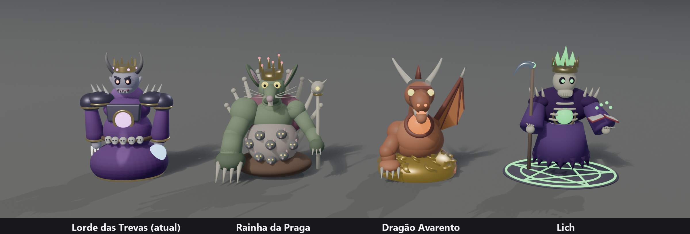
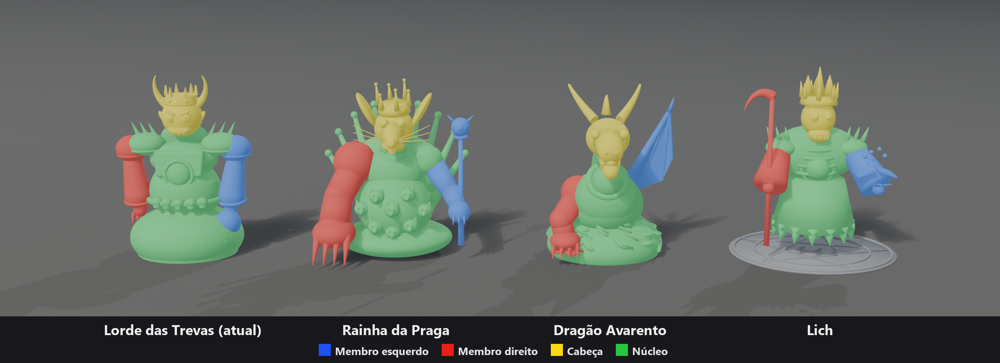
Azul = membro esquerdo · vermelho = membro direito · amarelo = cabeça · verde = núcleo.
5. Regras novas
Os detalhes que eu preenchi a partir do que combinamos. Texto completo em REGRAS_NOVAS.md.
Algum destes pontos você quer mudar antes de eu programar?
| Ato 1 | Ato 2 | Ato 3 e arena | |
|---|---|---|---|
| Elixir máximo (base) | 10 | 13 | 16 |
| 1 de elixir a cada | 2,8 s | 2,3 s | 1,9 s |
| Custo máximo nas ofertas | 7 | 9 | 12 |
- Teto com cartas e relíquias: elixir 20, mão 7. Mão começa em 5 para todos.
- Baralho: compra → mão → descarte; quando a compra acaba, o descarte é embaralhado. Dois montes clicáveis na tela.
- Retorna (cartas de custo 0): voltam para a compra no máximo uma vez por embaralhada, para não virar laço infinito.
- Cartas de Covil viram efeitos com duração (ex.: Coletor de Almas = +40% de elixir por 30 s) e ficam no ciclo.
- Disputa em 3 etapas: 0 etapas vencidas = nada; 1 ou 2 = ouro; as 3 = recompensa cheia. A 3ª etapa muda por ato.
- Estrada de 300 m por ato, cerca de 12 s de caminhada entre locais; a run continua em ~25 minutos.
- Desbloqueio: Praga livre, Dragão na fase 1, Lich na fase 2. Cada vilão vem com comuns, incomuns e 3 raras; o resto custa Almas.
- Saves antigos: Horda vira Praga; Ruína e Tesouro viram Dragão; Cripta e Culto viram Lich. Almas preservadas.
Já está pronto (branch viloes)
Não dependia de decisão sua. Testes automáticos: 0 falhas.
Estrada fundida ao chão
Antes: uma faixa por cima da outra
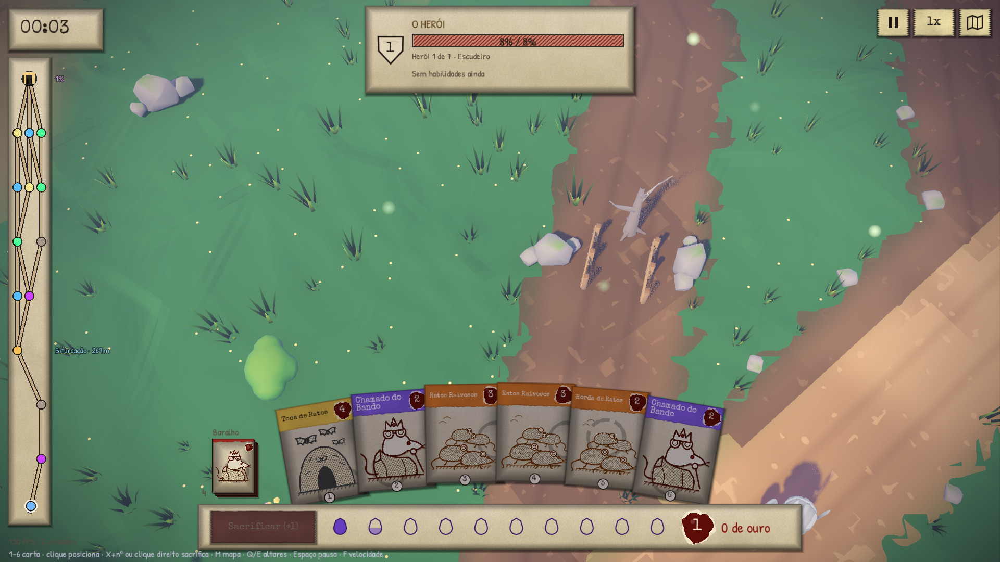
Depois: uma mancha só de terra
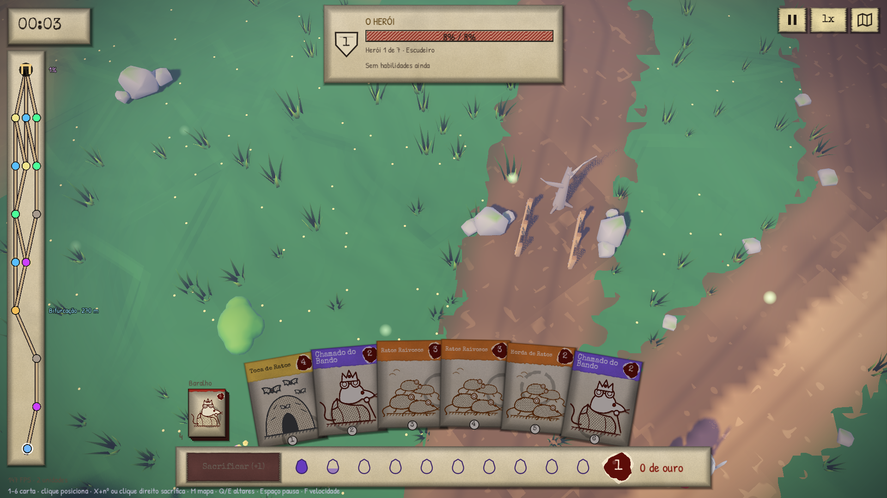
Loja dentro da tela
1280x720, interface a 115%, 6 itens
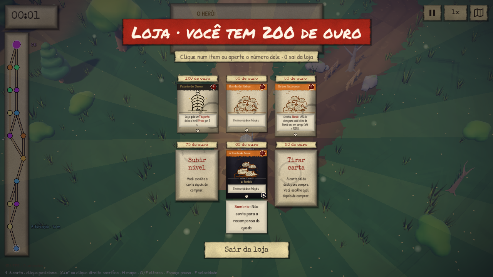
1600x900, 7 itens (com a Bolsa do Mercador)
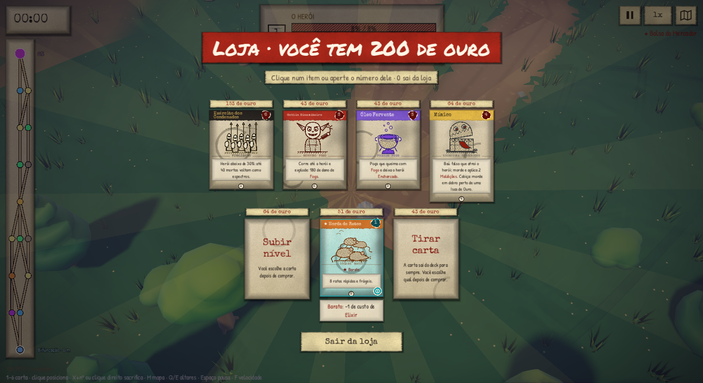
Portão de passagem nos atos 1 e 2
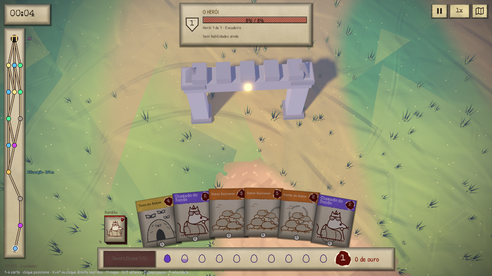
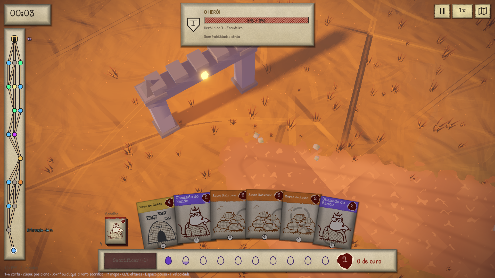
- Popup que travava: a caixa de explicação não segura mais o mouse nem cobre a carta vizinha; ao passar para outra carta, ela troca na hora. Vale para todos os menus.
- Raridade única: recompensas, contratos, eventos e relíquias trazem uma raridade só por oferta; a loja continua variada.
- "Seu covil" e o castelo só aparecem no ato 3.
- Heróis do menu: o cartaz já busca um desenho por classe; os 4 desenhos entram junto com a arte em massa.
Ainda não conferido por mim: rolagem da loja com a roda do mouse num baralho grande, o ícone do portão no mapa grande (tecla M) e as outras peles de interface além do Diário.